橘色圈圈：有繁體中文故事的國家
轉一轉地球，選一個 NewsToons 國家！🌍
所有故事
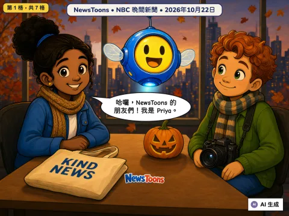
大雨救援、勇敢下水救人和願望成真
2026-10-22
🇺🇸 來自美國 · NBC Nightly News
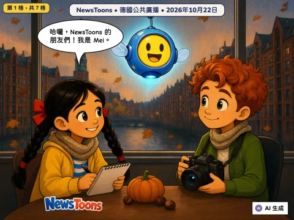
救生機器人海豚三號、桌遊展、銅管樂團和野貓寶寶
2026-10-22
🇩🇪 來自德國 · tagesschau, NDR & WDR
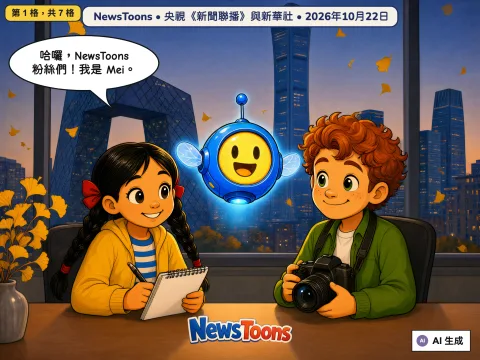
體操女隊奪冠、跨海大橋接起來、打破世界紀錄和《象行記》
2026-10-22
🇨🇳 來自中國 · Xinwen Lianbo (CCTV) & Xinhua
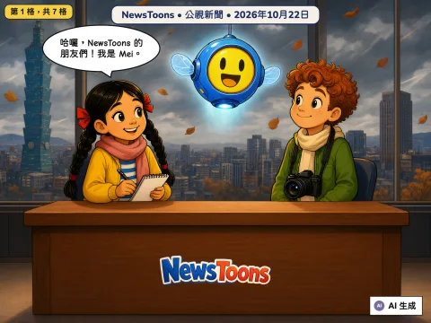
收容所狗狗變身心輔犬、彩球隊奪金和頂樓匹克球
2026-10-22
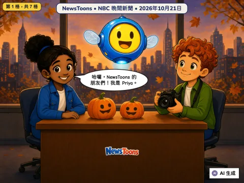
托雷多的鄰居平安，還有校車上的英雄
2026-10-21
🇺🇸 來自美國 · NBC Nightly News
一封讓上學路更安全的信，還有重回家園的大鳥
2026-10-21
🇩🇪 來自德國 · tagesschau, NDR, WDR & rbb
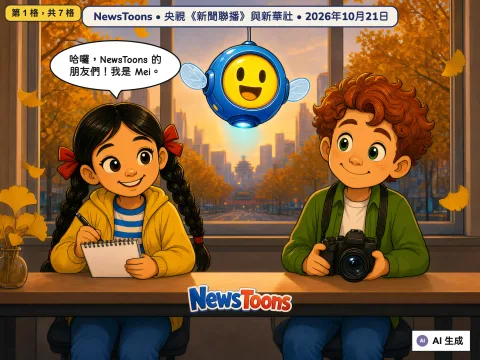
路上的氫能車、奧運門票，還有最早開門的滑雪場
2026-10-21
🇨🇳 來自中國 · Xinwen Lianbo (CCTV) and Xinhua
看得懂手語的手機，還有提早報到的紅葉
2026-10-21
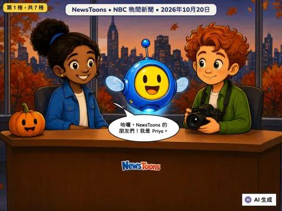
海上的大風暴，還有一架安全停下的飛機
2026-10-20
🇺🇸 來自美國 · NBC Nightly News
湖中央的鋼琴，還有兩位手足球冠軍
2026-10-20
🇩🇪 來自德國 · tagesschau, SWR, NDR
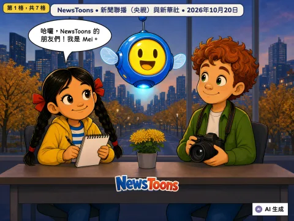
江水向北流，還有小鼠能戴的顯微鏡
2026-10-20
🇨🇳 來自中國 · Xinwen Lianbo (CCTV) and Xinhua
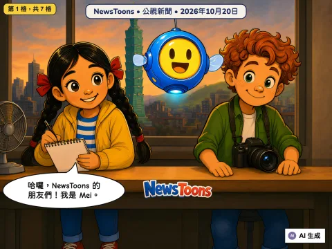
飛向火星衛星的太空船、清除病菌的機器人，還有最後一次運動會
2026-10-20
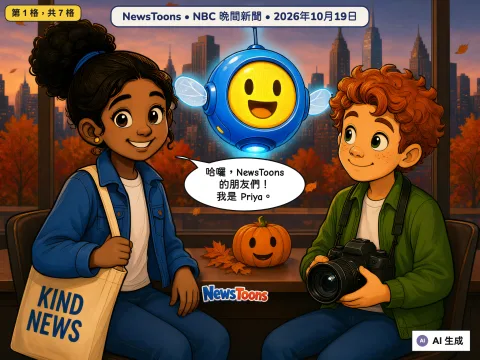
機場的消防員、閃亮的謎團，還有一頂分享的王冠
2026-10-19
🇺🇸 來自美國 · NBC Nightly News
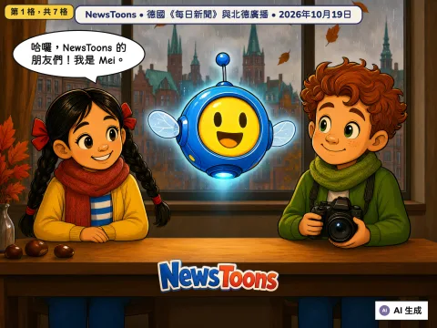
伊德菲克斯飛向火星的衛星，還有一位熱心的公車司機
2026-10-19
🇩🇪 來自德國 · tagesschau, NDR
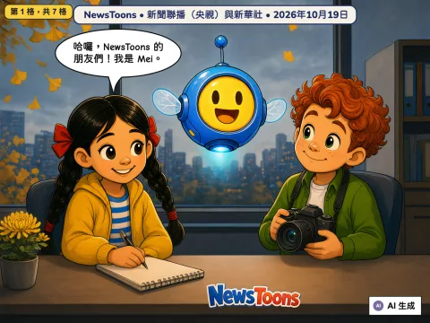
冠軍的笑容、一起訓練的泳將、蘇州的校園足球，還有沙漠邊的蘋果
2026-10-19
🇨🇳 來自中國 · Xinwen Lianbo (CCTV) and Xinhua
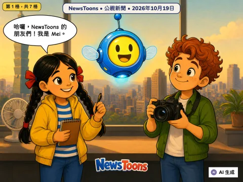
台灣準備迎接大颱風，還有人幫台灣帕拉羽球隊整理出空間
unconfirmed
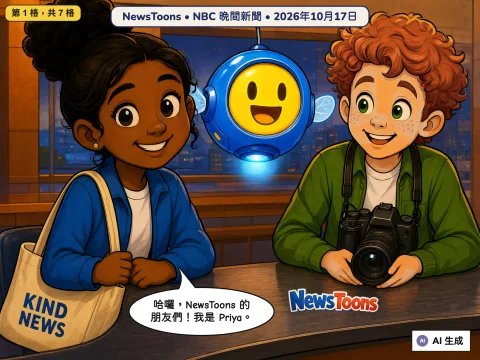
消防員幫大家回家，還有超級球迷的大日子
2026-10-17
🇺🇸 來自美國 · NBC Nightly News
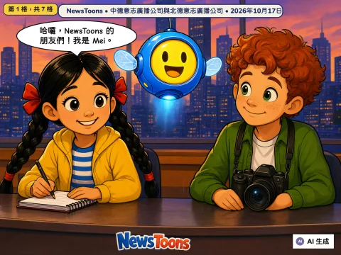
未來森林、熊的安全家園、長距離健行和海邊的風箏
2026-10-17
🇩🇪 來自德國 · MDR, NDR
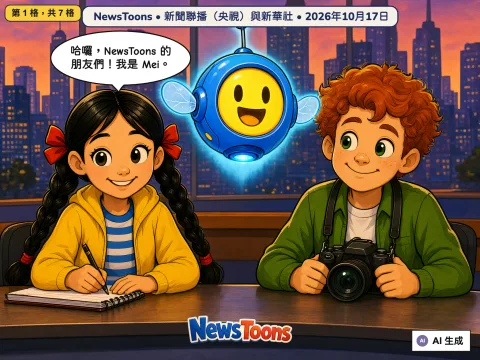
暖氣提早來了，鶴群準備飛往南方
2026-10-17
🇨🇳 來自中國 · Xinwen Lianbo (CCTV) and Xinhua
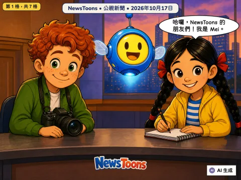
台南火車開進地下，兩兄弟，兩支球隊
2026-10-17
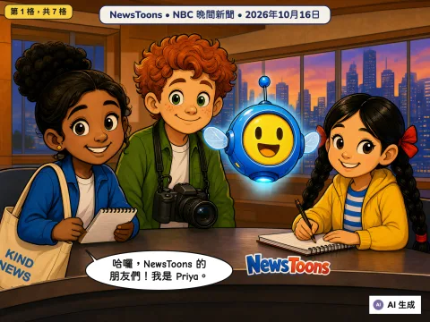
找到露露了、會跳的車和漢堡學者
2026-10-16
🇺🇸 來自美國 · NBC Nightly News
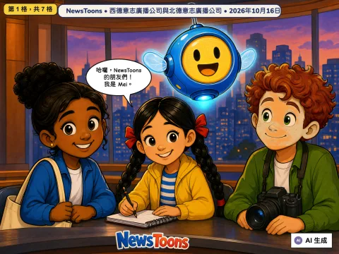
桌球金牌、長頸鹿寶寶、變乾淨的貓頭鷹和貼心的公車司機
2026-10-16
🇩🇪 來自德國 · WDR, NDR
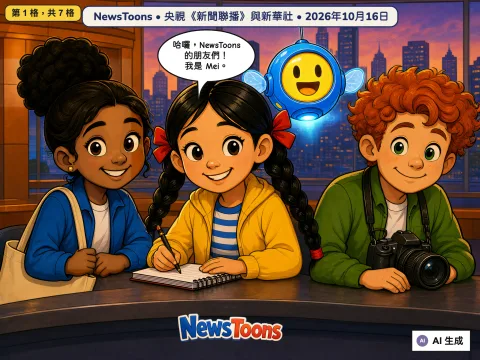
再見了，閏秒！智慧糧倉和沙地裡長出的樹林
2026-10-16
🇨🇳 來自中國 · Xinwen Lianbo (CCTV) and Xinhua
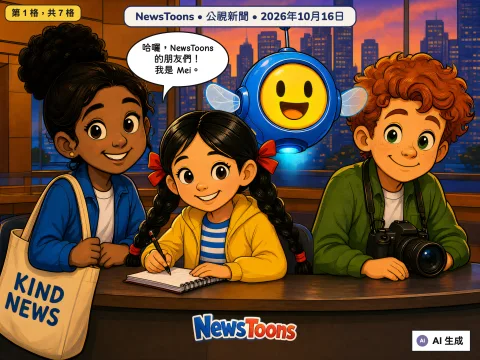
鯨魚通報員的號角和超大棒球巨蛋
2026-10-16
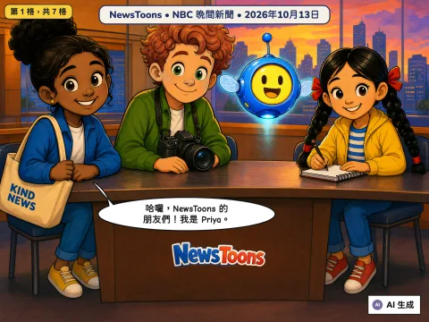
南瓜大逃亡與勇敢的哥哥
2026-10-13
🇺🇸 來自美國 · NBC 晚間新聞
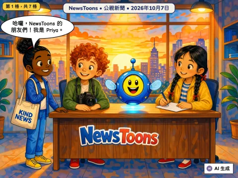
湖底古城、第一台蘋果電腦、熊本說謝謝和一座新橋
2026-10-07
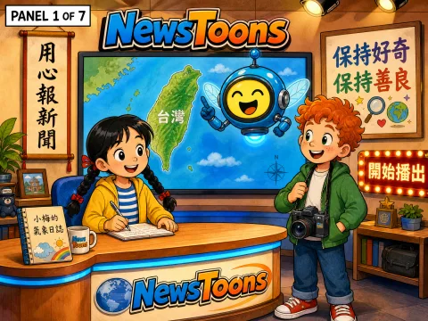
颱風、百隻鯨豚和珊瑚的益生菌
2026-08-04
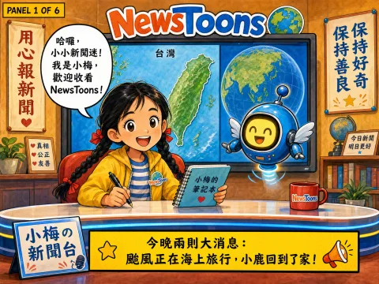
颱風來了！梅花鹿回家了！
2026-08-03